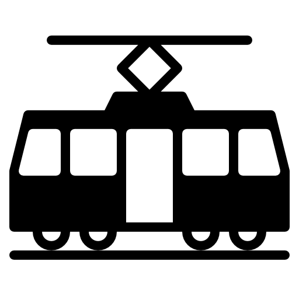
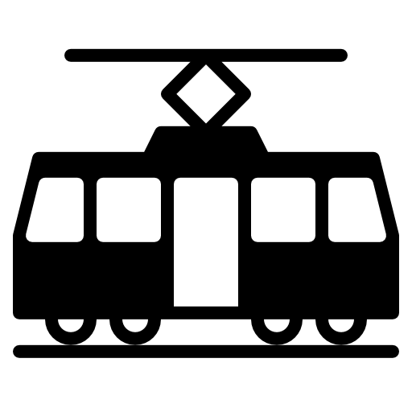

Transit Advocacy
Transit advocacy is the practice of promoting and supporting public transportation systems to improve urban mobility, reduce traffic congestion, and enhance the overall quality of life in cities. It involves various activities, including lobbying for better funding, raising awareness about the benefits of public transit, and encouraging community involvement in transportation planning.
Pre-war Urbanism
Pre-war urbanism refers to the design and development of cities before World War II. During this period, cities were often characterized by mixed-use neighborhoods, walkable streets, and a strong emphasis on public transportation. The layout of these cities promoted social interaction and community engagement, with amenities such as parks, schools, and shops located within walking distance of residential areas.
Modern Urbanism in North America
Modern urbanism, which emerged after World War II, is often marked by car-centric development patterns. This era saw the rise of suburban sprawl, with large residential areas separated from commercial and industrial zones. The focus on automobile transportation led to wider roads, increased parking spaces, and a decline in public transit use. This shift has had significant implications for urban sustainability, social equity, and overall quality of life.
Modern Urbanism in Europe
In contrast to North America, many European cities have maintained a focus on public transportation and walkability in their urban design. European urbanism often features dense, mixed-use neighborhoods with extensive public transit networks, including buses, trams, and metro systems. This approach has helped to reduce car dependency, promote sustainable transportation options, and enhance the overall livability of cities.
Dangers of Car-Centric Infrastructure
Car-centric infrastructure poses several dangers to urban environments. It contributes to increased traffic congestion, air pollution, and greenhouse gas emissions. The emphasis on cars often leads to the neglect of pedestrian and cyclist safety, resulting in higher rates of accidents and fatalities. Additionally, car-centric development can exacerbate social inequalities by limiting access to transportation for those who cannot afford a car or are unable to drive.